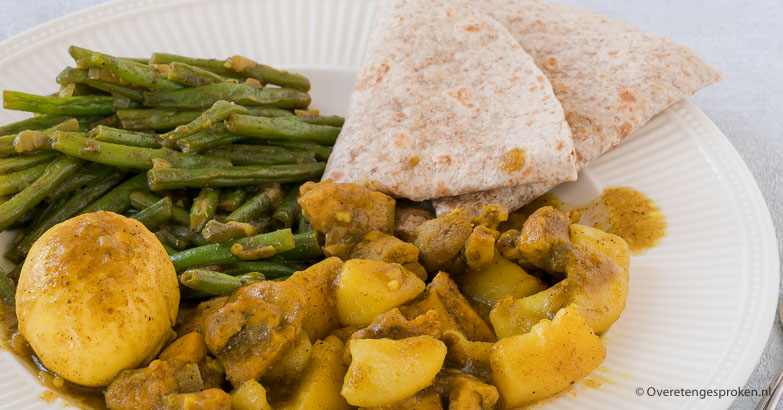

Roti a la martin

Heerlijke roti met vellen van de toko, met zoete aardappelen en kip!
Ingredienten 4 personen
- 2 kipfilets
- 2 grote zoete aardappelen
- 300 gram sperziebonen
- 2 eetlepels tomatenpuree
- 4 eetlepels kerie
- 2 eetlepels garam masala
- snuf peper
- 2 eieren (4 voor 4 pers)
- 3 maggiblokjes
- 2 grote uien
- 4 teentjes knoflook
- 4 roti vellen (toko)
Bereiding
- Ui en knoflook glazig bakken
- Voeg kipfilet toe en bak gaar
- voeg tomatenpuree toe en bak dit even kort aan
- voeg alle kruiden toe met een beker water
- Snij de zoete aardappelen in hapklare brokjes
- Punt de boontjes, en kook deze samen met de zoete aardappelen 5 minuten
- Kook de eieren in 8 minuten
- Voeg nu de zoete aardappelen en sperziebonen toe aan de kip mengsel en kook dit nog even door voor de smaak
- Serveer alles op een roti vel